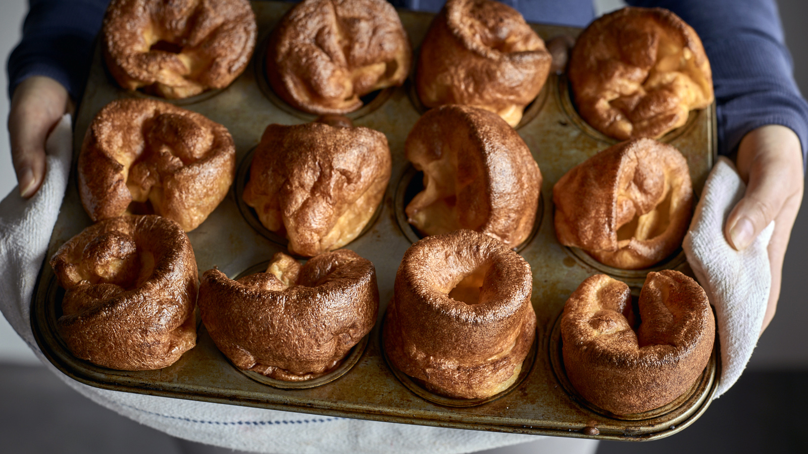

Yorkshire pudding is a popular British side dish that is traditionally served during Sunday roasts. It is made from a creamy batter consisting of flour, eggs, and milk or water. While some might think of it as a dessert, in Britain, pudding was typically a meat-based dish, whereas today puddings exist in a number of different variations.
Meal prep time : 25 minutes
Servings : 8 large pudding